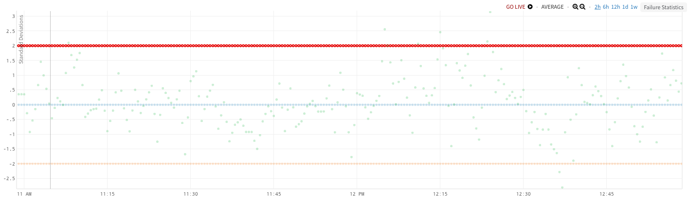
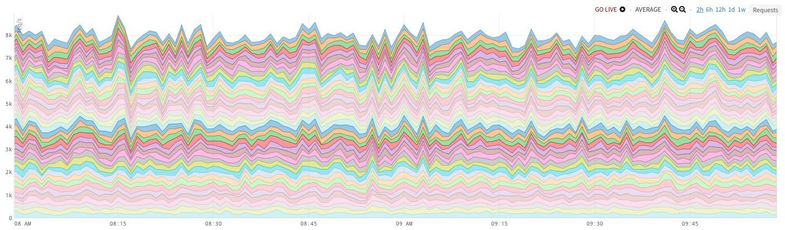
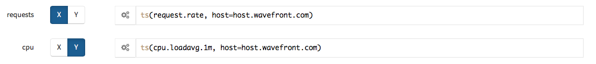
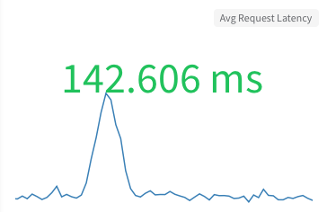

Charts are the primary way you view the status of your metrics. You add Wavefront Query Language queries to view and perform operations on metrics and configure chart options for the most helpful presentation.
Common Options
Describes options common to all chart types.
General
General options.
Name
The name of the chart. When a chart name is entered, it displays on the top right hand corner of the chart. There is no restriction on what you can enter as a chart name.
Point Tag Display Options
Which point tags to display on the chart legend or table.
- Show all - Show all point tags
- Top - Show top N most frequent point tags
- Custom - Show point tags of specific point tag keys
Summarize By
Point buckets represent summarized data across a certain amount of time. You can choose what type of summarization method to apply to the raw data values within each point bucket. The selected summarization method displays in the top right corner of the chart near the chart name.
You can summarize the raw data values within each point bucket by Average, Median, Min, Max, Count, and Sum. Suppose the horizontal scale for your chart is “240 point buckets across, 1 bucket – 30 sec (est)”. When you choose the Median summarization method, the raw data values reported in each 30 second boundary are aggregated and the median value displays as a point bucket.
The Count summarization method counts the number of raw data values reported in each 30 second boundary, and displays that value as a point bucket. First assigns a value to each point bucket based on the first raw data value reported within the bucket. Last works in a similar manner, but the point bucket value is based on the last raw data value reported within the bucket.
Display Source Events
Whether to display events generated by a firing alert associated with a source displayed on the chart.
You can also use events() queries to display events in charts.
Interpolate Points
Whether to interpolate points that exist only in the past or future into the current time window.
Include Obsolete Metrics
Whether to display metrics that have not reported data values in the last 4 weeks. Performance is slower when this is turned on, but it is useful if you are looking at data from 4 or more weeks ago that was only reported at that point in time.
Axis
Options that control the chart axis or axes.
Axis
The scale of the Y-axis: linear or logarithmic. In most cases, linear is sufficient as long as there is not a large difference in measurement between the reported data points. If a large difference in measurement scale is present, use the logarithmic scale. By default, set to linear. By default, the logarithmic scale is set to the power of 10, which can be adjusted.
Min/Max
The minimum and maximum value on the Y-axis. If you are using a double Y-axis, you can specify min/max values for each Y-axis (By default, set to auto).
Unit
The unit of measurement to assign to the reported chart values label that appears along the Y-axis of the chart. For example, if the data for ts(“requests.latency”) is in milliseconds, you can either enter ms in the text field or click the Units down-arrow and select Time > ms.
The specified unit is merely a label and does not change the unit of measurement for the given expression. If you are using a double Y-axis, you can specify a unit for each Y-axis. For information on unit prefixes and dynamic units, see Units in Chart Axes and Legends.
Style
Options that control the style of the chart.
Gap Threshold
Controls when data is considered missing when there are gaps in the reporting of the data. The gap threshold is expressed in seconds. Dashed lines on a chart represent missing data. Gap thresholds do not fill in values for missing data, but instead just give a visual representation that the data is still there. If you hover over the chart, you won’t see values where the gap threshold has been applied.
Interpolation
The function used to join points between each point bucket:
- Linear - a straight line.
- Step Before - a step value at the beginning of the bucket.
- Step After - a step value at the end of the bucket.
- Basis - a B-spline.
- Cardinal - a Cardinal spline.
- Monotone - a cubic interpolation that preserves monotonicity.
Description
A description of the chart. This is typically created by users with Dashboard Management permission, since most of the time you want the chart description to be saved for other users to view.
Legend
Options that control the legend display.
Non-summarized Stats
Whether to report summarized or raw values for all metric values and statistics in the legend. When this setting is disabled, the legend reports summarized values according to the Summarize By setting.
Disable Legend on Hover
Whether to display the legend when hovering over the chart.
Position
The position of the fixed legend on the screen.
Display
Which values and statistics to display in the legend: current, mean, median, sum, min, max, and count.
Filter
Filter which metrics are displayed on the legend. You can choose the top or bottom N metrics based on the selected value or statistic.
Line Plot

A line plot chart represents interpolated point buckets. The X-axis represents the amount of time in your time window and the Y-axis represents the value associated with the data based on that time.
By default, if there are no reported data values within a 60 second span, Wavefront displays gaps of missing data. A line plot chart displays gaps of missing data as dashed lines. Gaps of missing data are tied to each stream displayed on the chart. For example, if a displayed stream has two minutes where no data values are reported, then that two minute gap displays as a dashed line. The Gap Threshold property allows you to adjust the amount of time before gaps of missing data display as dashed lines.
Point Plot

A point plot chart displays point buckets without any interpolation. Like a line chart, the X-axis represents the amount of time in your time window, and the Y-axis represents the value associated with the data during that time window.
Stacked Area

A stacked area chart is based on the line chart and behaves similarly except that:
- The magnitude of each line is filled in as a solid block with each block being stacked one on top of another. Using the default Stack Type of zero, leads to the peak of the chart at any time being the sum of the magnitudes of all the sources at that time.
- The stacked areas are displayed in alphabetical order, first by the name of the Query field and then by sources, metrics, or tags within that query field.
The stacked area chart is a great way to visualize data when you want to be able to determine at a glance which queries have the largest magnitude at any point in time. It is most commonly used to visually compare two or more quantities.
Style
Options that control the style of the chart.
Stack Type
Determines how the data is visualized:
- Zero - This is the default and displays the chart as from 0 up to the sum of all points at that time interval.
- Normalize to 0-1 - Results in a similar shape to Zero except that the values are normalized such that they fill the range between 0 and 1 with the peak of the chart always a solid line drawn at magnitude 1.
- Minimize Weighted Change - Plots the area while attempting to minimize the weighted change in slope of the lines. Both this and Center the Stream options tend to result in similar shapes in which the chart does not show a solid area beginning at 0.
- Center the Stream - Represents the collective magnitude of the queries displayed on the chart with the band narrowing or widening as the metrics fluctuate over time. For example:

Scatter Plot

A scatter plot differs from all other Wavefront charts in that it compares time series expressions against one another. All other Wavefront charts compare time series against time. The scatter plot is useful to see whether two (or more) data sets are positively, negatively, or not correlated. Each point on a scatter plot represents a summary of points over a specified amount of time. In Wavefront terminology, these summarized points are called buckets. You can view the extent of the summarization applied at the bottom left hand side of each chart.
When creating a scatter plot in Wavefront, you specify which expressions are mapped to which axes. The image below shows how the X and Y-axes are defined for a scatter plot. Based on the upwards slope of the points, we can see that the request rate and CPU load are positively correlated—as one increases, the other follows.

When using scatter plots in Wavefront, it is important to note that series matching ensures that reporting sources are actively reporting metrics for all specified time series expressions. If a unique series (metric + source + point tags) is actively reporting for only one time series expression, it is not displayed. If there are no sources that are reporting for all time series expressions, then no data displays on the chart. If multiple X and Y-axes are defined, you must ensure that each time series expression associated to an axes has at least one common source reporting, otherwise no data is shown on the chart. Only unique series that are reporting for every defined time series expression display.
Style
Options that control the style of the chart.
Use Time-based Coloring
Modify the color of the data points so that darker colors represent more recent data and lighter colors represent older data.
Tabular View

A tabular view chart displays data per stream in a table format. In tabular view, only one data point value is displayed per source. The value is a summary of all of the data points available as set in the Summarized By field based on the configured time window.
Single Stat View

A single stat chart plots a single series on a chart and has a summarized value for that series displayed in large font on the chart. The font size and placement of the displayed value can be unique for each chart. A common use case is displaying instantaneous values of critical metrics on an overhead display.
Sparkline
Options controlling how the graph summarizing the series displays.
Sparkline
The position of the sparkline. The options are Bottom which means below the single stat, Background which places the sparkline in the background of the single stat, or None for no sparkline on the chart.
Line Color
The color of the sparkline.
Value/Color Mapping
The color of the single stat based on its value. You add and remove color thresholds using the plus and minus buttons. Click each field to specify the colors and threshold values.
In the following example:

the single stat is green if its value is less than 150, yellow when the value is between 150 and 200, and orange when the value is greater than 200.
Color Applies To
Whether the Value/Color Mapping applies to the color of the single stat text or the chart background.
Fill Color
The fill color for the chart area below the sparkline.
Single Stat
Display Value
Whether to show the metric value or the metric label as the single stat.
Horizontal Position
The horizontal position of the single stat. The options are Left, Middle, or Right of the chart.
Text Font Size
The font size of the single stat.
Text Color
The color of the single stat.
Prefix
A string to prefix the single stat.
Value/Text Mapping
Strings to display instead of the metric value based on the value. You add and remove value thresholds using the plus and minus buttons. Click each field to specify the strings and threshold values.
In the following example:

the string lower displays when the metrics value is below 150, middle displays when the value is between 150 and 200, and upper displays when the value is above 200.
Decimal Precision
The number of digits to display after the decimal point in the summarized value.
Postfix
A string to postfix the single stat.
Markdown

A Markdown chart allows you to provide in-depth text descriptions of a dashboard and individual charts. In addition to Markdown formatted text, you can use links, images hosted outside Wavefront, and dashboard variables. You can refer to the value of a dashboard variable with the query variable syntax ${var_name} and the label of the variable using %{var_name}. Using a label instead of the variable value could be useful for list variables that might show the drop-down labels such as: Any, 1 Year, 3 Years which could map to opaque values such as -1, 1, 3.
The introductory dashboards contain many examples of Markdown charts.
General
General options.
Markdown
Text styled with Markdown markup.